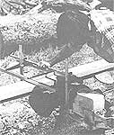

Safety, Selection, Milling, and More!
Stopping By Woods...
Chain Saw Safety
Chain Saw Sense
Chain Saw Mini-Mills
Chain Saw Skills
Their sizes range from small to tall-and so do their prices. But no matter the style, here's ...
A chain saw lumber mill is a mechanical device that attaches to the saw's guide bar and-with the aid of a guide board "track" (usually a 2 X 4 or 2 X 6) nailed to the project log-allows you to make perfectly parallel milling cuts the entire length of a log. The primary advantage of using a mill attachment is that you can cut slabs that are smoother, straighter, and more equal in size than is possible with freehand ripping.
Although there are many brands of chain saw lumber mills on the market today, there are only two basic types: small vertical mills, and the more involved horizontal units. Which type is better for you depends on your needs. Let's take a look at both.
Vertical mills are, for the most part, simpler in construction, give you more usable guide-bar cutting length (because they fit closer to the surface of the log), and are less expensive to purchase. Moreover, vertical mills are also easier to install on, and remove from, your saw than are the more complex horizontal devices, which often require that you drill one or more holes through the bar to accept attaching bolts.
When you're shopping for a vertical mill, be sure to choose one that allows the saw to pivot up and down while it's in use, and that can also be locked at any cutting angle. This feature will allow you to adjust the bar angle so that the chain does not protrude excessively from the bottom of the log-thus eliminating the necessity of raising the project log high off the ground to protect the bar-tip and chain.
Another advantage of being able to adjust the cutting angle of the bar without removing it from the mill is that you can put more cutters to work at any one time by using the lowest angle possible (which will be determined by the thickness of the log). And finally, there is little need to change bar length when milling different diameter logs if you have the option of adjusting the cutting angle.
Horizontal mills are generally more expensive-sometimes they're much more expensive-than the vertical mechanisms. Also, because they travel alongside the log, they shorten the guide bar's working length by several inches. (The horizontal mill attachment I use on my Stihl 076AV reduces the working length of the bar by a full foot!)
Of course, there are plenty of advantages to using a horizontal mill, too. Probably the biggest plus is that after you've sliced the first half= round slab off the top of a log, there's no need to remove, reposition, and reattach the guide board for every single slab you cut-as you must do with the vertical mills. Instead, just nail the guide board onto the first flat-milled side of the log, and then simply adjust
the mill's vertical-thickness calibrating device for each new cut.
And for extremely heavy-duty use, horizontal mills may be purchased equipped with double-ended bars to accept two powerheads. These same special bars also take a "helper handle" device with a roller assembly, which makes the task of pulling a large saw through a hefty log much easier. And finally, special auxiliary oiler assemblies are available that mount at the end of the guide bar and provide the extra lubrication needed to meet the extreme demands of continuous milling.
To summarize, I'd say that the type of attachment you choosevertical or horizontal-should depend on the difficulty and frequency of milling you intend to do. If you'll be slicing up only an occasional softwood log for craft projects, or maybe squaring a few logs for beams from time to time, I'd go with one of the pivoting vertical units ...most of which are available for well under $100. If, on the other hand, you are planning to square all the logs and mill all the lumber needed to construct an entire cabin, you'll almost certainly be better off with a substantial horizontal attachment (and a hefty powerhead).
In either case, if you're planning an extensive milling expedition into the backcountry, be sure to carry along at least one extra com plete set of nuts and bolts for your mill-including the large U-bolts for the thickness-rail adjustment on the horizontal mills. In order to prevent damage to your saw's guide bar or the mill itself, these bolts are generally of "carriage" quality, designed to break when overtightened or tightened unevenly.
In my many years of professional chain saw experience, I've found that with a combination of the right saw and mill attachment for the job, chain saw milling can be an economical, efficient way to producc quality lumber.
Harold C. McIntosh who is the author of The Chain Saw Craft Book, demonstrates the use of a horizontal chain saw lumber-milling attachment. Notice the guide board nailed to the top of the project log, and the vertical-thickness calibrating device that allows for adjustment of slap thickness without removing, repositioning, and reattaching the guide board.
|
 |
|
|